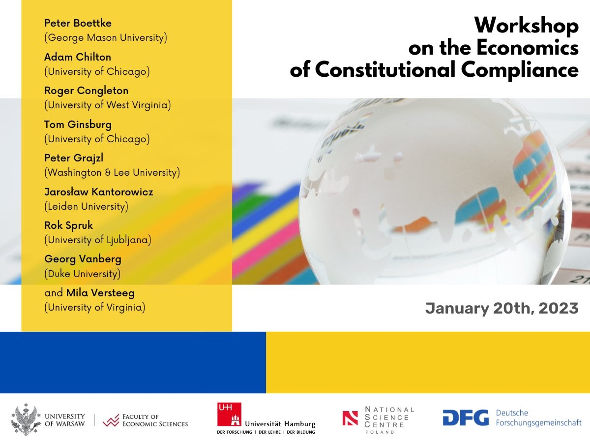

-
20 January 2023
Closing workshop on the economics of constitutional compliance
online

Program (all times CET)
Friday, 20 January 2023
- 14.00–14.30
- Stefan Voigt (UHH): Welcome remarks and overview of the research project
- 14.30–14.50
- Adam Chilton (Chicago; with Mila Versteeg, Virginia): The impact of militant democracy provisions
- 14.50–15.10
- Georg Vanberg (Duke): Remarks and ideas for future research on “militant constitutionalism”
- 15.10–15.30
- General discussion
- 15.30–16.00
- Tom Ginsburg (Chicago; with Zach Elkins, Texas): What makes term limits work?
- 16.00–16.15
- General discussion
- 16.15–16.35
- Jerg Gutmann (UHH): The CCC database – and possible applications
- 16.35–16.50
- Peter Grajzl (Washington & Lee): Remarks and ideas for future research on the CCC database
- 16.50–17.00
- General discussion
- 17.00–17.30
- Jaroslaw Kantorowicz (Leiden; with Katarzyna Metelska-Szaniawska, Warsaw): Do people value compliance with (constitutional) fiscal rules? Evidence from a conjoint experiment
- 17.30–17.45
- Peter Boettke (GMU): Comments and ideas for future research
- 17.45–18.00
- Discussion
- 18.00–18.30
- Rok Spruk (Ljubljana; with Nuno Garoupa, GMU): Long-term effects of constitutional breakdowns: Evidence from Iran
- 18.45–19.00
- Roger Congleton (West Virginia): Comments and ideas for future research
- 19.00–19.15
- Discussion
- 19.15–19.45
- Mila Versteeg (Virginia; with Adam Chilton, Chicago; Cristian Eyzaguirre, Chicago; David Landau, Florida State): On the constitution-making process in Chile
- 19.45–20.00
- Gabriel Negretto (CIDE Mexico): Comments and ideas for future research
- 20.00–20.15
- Discussion
-
8–11 September 2022
Project workshop on the economics of compliance with constitutions
Hotel Mercure Gdańsk Posejdon
Participants: Stefan Voigt (Hamburg), Jerg Gutmann (Hamburg/Freiburg), Katarzyna Metelska-Szaniawska (Warsaw), Jan Fałkowski (Warsaw), Jacek Lewkowicz (Warsaw), Anna Lewczuk (Warsaw), Christian Bjørnskov (Aarhus), Niclas Berggren (Stockholm/Prague), Bernd Hayo (Marburg), Jaroslaw Kantorowicz (Leiden).
Agenda
Friday, 9 September 2022
- 9.00–9.30
- Stefan Voigt: Introduction to the “Economics of Compliance with Constitutions” project
- 9.30–11.00
- Papers session 1
Jan Fałkowski: Watch out for words: The wording of constitutions and constitutional compliance of the executive (with Zimin Luo, Jacek Lewkowicz)
Anna Lewczuk: Political party’s ideology and constitutional compliance (with Jacek Lewkowicz, Rafał Woźniak) - 11.30–13.00
- Papers session 2
Jerg Gutmann: Are populists constitutionalists? An empirical assessment of populist constitutional compliance (with Martin Rode)
Jacek Lewkowicz: The longer the worse? The case of populism and constitutional compliance (with Anna Lewczuk, Rafał Woźniak) - 14.30–16.00
- Papers session 3
Stefan Voigt: Unlawful states of emergency – are COVID related ones any different? (with Christian Bjørnskov)
Christian Bjørnskov: Coups and constitutional change (with Stefan Voigt) - 16.30–18.00
- Papers session 4
Jaroslaw Kantorowicz: Do people value compliance with (constitutional) fiscal rules? Evidence from a conjoint experiment (with Katarzyna Metelska-Szaniawska)
Katarzyna Metelska-Szaniawska: Constitutional (non)compliance and economic growth
Saturday, 10 September 2022
- 9.00–10.30
- Papers session 5
Bernd Hayo: Judicial independence: Why does de facto diverge from de jure? (with Stefan Voigt)
Niclas Berggren: The rule of law predicts trust in journalists and scientists (with Christian Bjørnskov, Alexandra Sandström) - 11.00–13.00
- Discussion of the project follow-up (project members and partners)
- 14.30–16.00
- Discussion of the next steps in the project (project members)